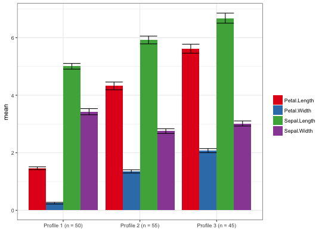
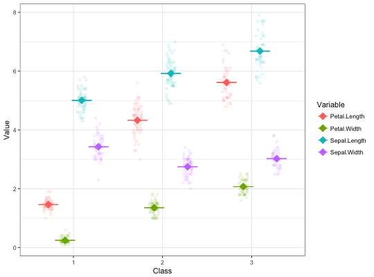

Plot variable means and variances by profile for mclust output
plot_profiles(x, to_center = F, to_scale = F, plot_what = "tibble", plot_error_bars = TRUE, plot_rawdata = TRUE, ci = 0.95)
| x | output from create_profiles_mclust() |
|---|---|
| to_center | whether to center the data before plotting |
| to_scale | whether to scale the data before plotting |
| plot_what | whether to plot tibble or mclust output from estimate_profiles(); defaults to tibble |
| plot_error_bars | whether to plot error bars (representing the 95 percent confidence interval for the mean of each variable) |
| plot_rawdata | whether to plot raw data; defaults to TRUE |
| ci | confidence interval to plot (defaults to 0.95) |
Plot the variable means and variances for data frame output from estimate_profiles()
m3 <- estimate_profiles(iris, Sepal.Length, Sepal.Width, Petal.Length, Petal.Width, model = 1, n_profiles = 3)#>#>#>#>plot_profiles(m3)m3 <- estimate_profiles(iris, Sepal.Length, Sepal.Width, Petal.Length, Petal.Width, model = 1, n_profiles = 3, to_return = "mclust")#>#>#>#>plot_profiles(m3, plot_what = "mclust")